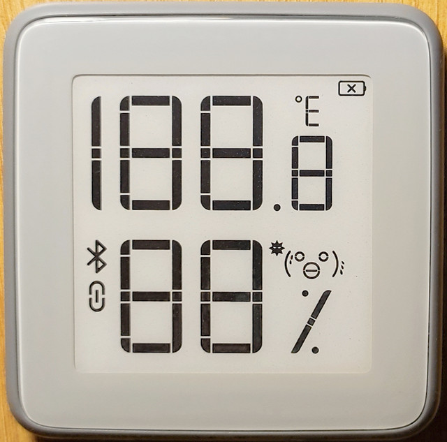
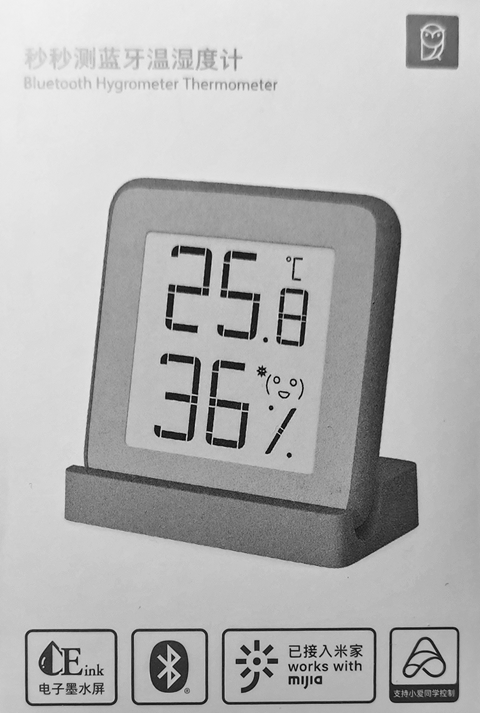
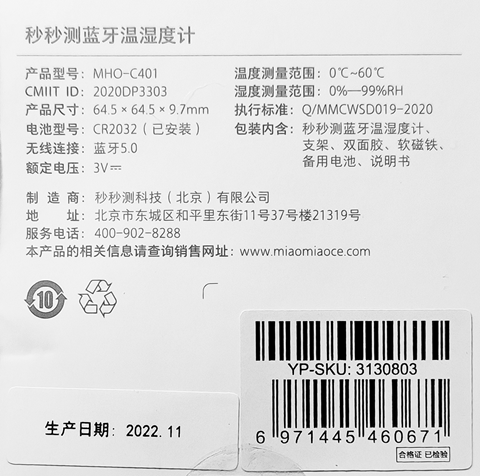

E-ink Xiaomi Mijia BLE MHO-C401 (2022.11)
Chips: TLSR8251F512ET24, SHTV3


Alternate firmware
Power Consumption: Original Firmware MHO-C401_v1.0.0_0016
LCD segments
,
Full Flash Original Firmware MHO-C401_v1.0.0_0016